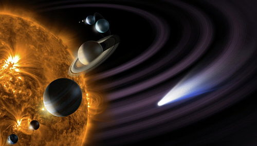

Articulo del Sistema Solar
El Sol es una estrella vulgar, ni grande ni pequeña, ni caliente ni fría, ni joven ni vieja.

El Sol es una estrella vulgar, ni grande ni pequeña, ni caliente ni fría, ni joven ni vieja.
Se calcula que su edad es de 5.000 millones de años y que seguirá brillando con la misma intensidad otros tantos.
Cuando el sol alcance la edad de 11.000 millones de años habrá agotado todo el hidrogeno que está utilizando como combustible, y empezará a consumir helio en sus reacciones nucleares. Entonces el sol pasará de ser una estrella normal a convertirse en una gigante roja. Su volumen crecerá hasta las proximidades del actual planeta Mercurio. Todos los planetas hasta Marte serán atraídos y englobados en la masa del Sol. Nuevas transformaciones convertirán al Sol en una estrella pulsátil, y después en una enana blanca, en la que toda su masa se concentrará en un tamaño similar al de nuestra Tierra. Los planetas más lejanos se contraerán o se extinguirán, alterándose toda la mecánica de nuestro sistema solar y posiblemente influyendo en el de las estrellas próximas. Pero, mientras tanto, ahí está, y es el centro de nuestra casa. El Sistema Solar, inmenso según nuestra escala, es, sin embargo, una parte muy pequeña del Universo. ¿Cómo se formó? ¿De qué está hecho? ¿Cómo funciona? Este capítulo contiene diversos artículos sobre nuestro Sistema Solar.
